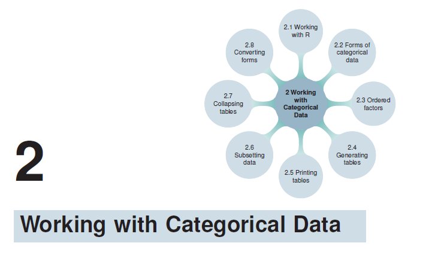
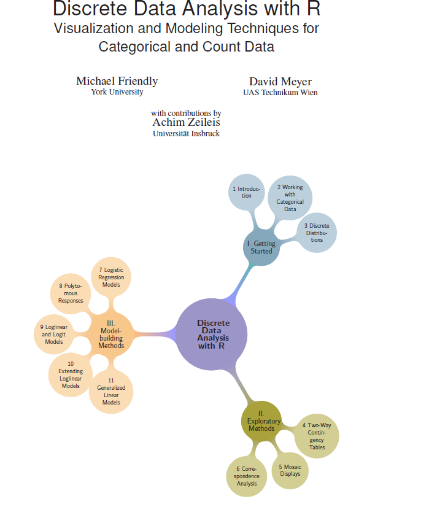
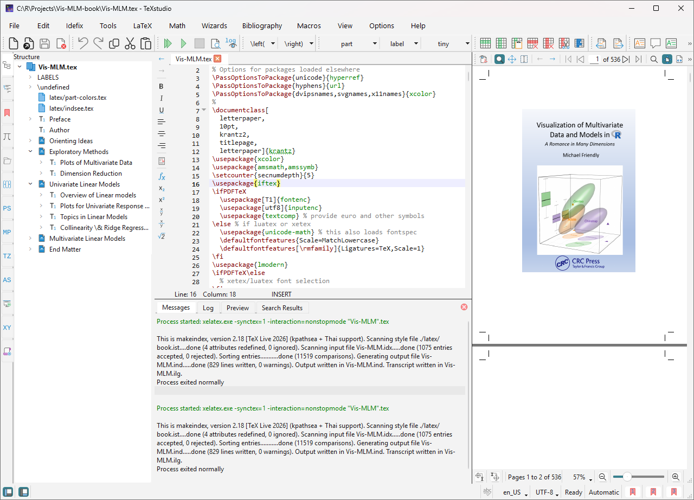
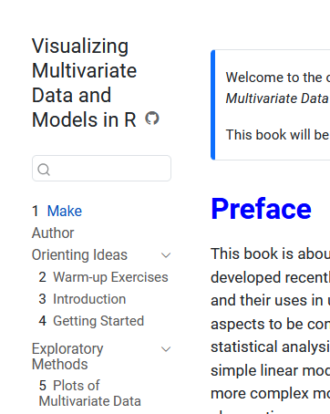

Quarto Is Not LaTeX, However Hard It Tries
From .Rnw to Quarto: What I Gained, What I Lost
.Rnw vs. Quarto: the abstraction layer over LaTeX that buys you HTML but costs you control
This is another post in the Making of Vis-MLM series. The first post described the .Rnw vs. Quarto pipelines and the topics I’ll be covering. Here I go deeper on what that trade-off actually felt like in practice— where the abstraction in Quarto over LaTeX helped, where it hurt, and what it took to recover control.
When I was writing Discrete Data Analysis with R in .Rnw, I had complete control over the entire PDF pipeline. I could design custom visual chapter headers and Part title pages with coordinated accent colors:


Along with a nice page design, theme colors for the various book parts, a comprehensive dual index (Subject + Author), DDAR is the book I’m most proud of. I wanted the current book, Visualizing Multivariate Data and Models in R to give me a similar pride in publishing a technical book about advanced multivariate graphical methods.
Quarto traded that control for something I genuinely wanted: a free online HTML version alongside the print book, all produced from a single source. The trade-off turned out to be steeper than advertised. This post documents where the abstraction layer in Quarto broke things that were trivial in .Rnw.
Don’t get me wrong. This is not a cry-baby post about the work to move a writing project to new technology like Quarto. It is more about a variety of small, but important things that could be done better, to make the writing task easier. In AI speak, I’d like to consume fewer personal tokens to re-write a paragraph, introduce or edit an existing graph, add citations, etc., and be able to see the result, in HTML or PDF fairly quickly.
The fundamental tension
In .Rnw (R NoWeb) format, you controlled the LaTeX. My top-level file was book.Rnw. Compiling this in RStudio did the knitr processing of chunks, emitting formatted code, output and graphics and producing a LaTeX file, book.tex.
This .tex file was entirely yours: the exact \usepackage{} calls you wrote, \input{} for included files, \cite{}, \index{} exactly as authored. Math equations were written directly in LaTeX. Nothing was generated or renamed by an intermediate tool. A PDF file was produced directly.
After R processing, you could open the book.tex file in the nice LaTex GUI TeXStudio, see you can see the entire structure of the book pinpoint exactly where problems were, and re-run any individual step in the pipeline. In the process of creating the PDF, it wrote a .synctex file that allowed clicking on something in the PDF viewer and going right to the lines in the .tex file that produced them.

.tex file is visible and navigable, with the document structure panel on the left.In Quarto, pandoc owns the .tex file. It reads your Markdown (with knitr-executed R output spliced in), resolves citations itself via citeproc, and emits LaTeX that doesn’t look like anything you wrote. External tools that plug into the traditional LaTeX pipeline—BibTeX, authorindex, makeindex—often break because the .tex and .aux files don’t have the structure those tools expect.
The _quarto.yml file is now the center of gravity: It defines the project type, book metadata, chapter list, bibliography sources, output formats. That works beautifully for simple projects. When something breaks, knowing where to look is the first puzzle.
What this also means is that there is much more to learn and understand if you want to take advantages of some of the lovely features Quarto offers:
- Extensions: Analogous to LaTeX packages, the Quarto community provides a wide range of extensions for things like custom callouts, diagrams, and shortcodes.
- Multiple languages: Quarto supports R, Python,
mermaiddiagrams, and more in the same document. - Conditional compilation: Different content for HTML vs. PDF from a single source — animated graphics in HTML, static replacements in PDF.
- Tabsets: Easy reader-selectable views in HTML (R vs. Python code, data by group, …) with no natural equivalent in print.
But you can quickly get into trouble if you want features (like a serious index, fancy page design, external LaTeX tools) that are simple in LaTeX but fraught in Quarto. As I write this, a Quarto 2.0 is in the works. The Quarto team acknowledges: “Quarto 1 is built by integrating a number of tools that work very well in isolation, but aren’t designed to be performant when used together.” The issues run deeper.
Whitespace shouldn’t matter
When writing, the focus should be on ideas—markup exists to express them in style and formatting. Markdown violates the spirit of WYSIWG in a few quiet ways:
- Hard line breaks: ending a line with two or more trailing spaces before a newline creates an HTML
<br>within the paragraph. A common invisible typo. - Blank lines matter: code chunks, equations, and list items placed immediately after prose (without a blank line) often render unexpectedly. The rule is consistent, but inconsistent with how authors think.
The <div> vs ::: design
Nearly everything in Quarto that is not straight-up text or a code chunk—callout blocks, conditional content, custom layouts—uses the fenced div syntax:
::: {.callout-note}
Text here.
:::This maps to the HTML <div>...</div> construct: a generic container used for grouping, styling, and JavaScript targeting. <div> nesting is how the web creates hierarchical structure, with properties inherited from parents.
The problem is visual legibility in source. HTML developers indent nested <div> elements to make hierarchy visible. Quarto’s ::: syntax provides no standard indentation convention: deeply nested conditional blocks (a callout inside a format-conditional block inside a tabset) become a wall of colons with no visual hierarchy. This is minor but adds up across a 15-chapter book.
Global variables and LaTeX definitions
One nice feature of the .Rnw workflow was the ability to define global variables in LaTeX and in R. In Quarto, every chapter listed in the _quarto.yml file is compiled separately, so anything common must be replicated in each chapter.
For example, my book.Rnw used this chunk to ensure a clean workspace, initialize a list of R packages used in the book, and define a list of chapters, includeonly, specifying which would be processed in the current build.
<<includeonly, include=FALSE>>=
# start each run with a clean workspace
remove(list=ls())
.pkgs <- list()
# chapter names
chapters <- c(sprintf("ch%02d", 1:11))
includeonly <- chapters[1:4]
includes = function(file) {
if (file %in% includeonly) paste0(file, '.Rnw')
}
.globals <- c("chapters", "includeonly", "includes" , ".pkgs")
# write any messages to a single file
unlink('messages.txt') # Start fresh with each run
@In Quarto, there is no such thing as global variables. Every chapter listed in your _quarto.yml file is compiled separately. Instead, something similar was achieved by starting each chapter .qmd with this chunk:
My file R/common.R sets knitr and R options, ggplot2 themes and shorthands, colors, and more. It also defines a collection of R functions and LaTeX macros for generating consistent, automatic index entries, described in Creating Book Indexes in Quarto.
In addition, I use many LaTeX shortcuts in equations, particularly for matrices and vectors, such as:
\renewcommand{\vec}[1]{\ensuremath{\mathbf{#1}}} % vectors
\newcommand{\mat}[1]{\ensuremath{\mathbf{#1}}} % matrix (bold)
\newcommand{\trans}{\ensuremath{^\mathsf{T}}} % transpose
\newcommand*{\rank}[1]{\ensuremath{\mathrm{rank} (\mat{#1})}}
\newcommand*{\dev}[1]{(#1 - \bar{#1})}
\newcommand*{\inv}[1]{\ensuremath{\mat{#1}^{-1}}}
\newcommand*{\half}[1]{\ensuremath{\mat{#1}^{1/2}}}Instead of defining these via an \input{commands}, I hit on a way to do the same in Quarto, but this involved including a file commands.qmd, but only for the HTML version that uses MathJax for equations.
::: {.content-visible unless-format="pdf"}
{{< include latex/latex-commands.qmd >}}
:::For PDF, custom LaTeX commands go in preamble.tex, referenced in _quarto.yml under pdf: include-in-header:. XeLaTeX picks them up normally; nothing extra is needed.
For HTML, math is rendered by MathJax (a JavaScript engine running in the browser), not by LaTeX. MathJax supports \newcommand but only sees what is defined in the HTML page itself. preamble.tex is never sent to the browser, so any custom macros defined there are simply unknown to MathJax — equations that use them render as raw command names like \mat{X} instead of X.
The fix was to put the same \newcommand definitions in a small .qmd file (inside a $$...$$ display block so MathJax processes them as math), then inject it at the top of each chapter using {{< include >}}. Wrapping the include in ::: {.content-visible unless-format="pdf"} ensures it only runs for HTML output — PDF already has the definitions from the preamble.
{{< include file >}} is a Quarto shortcode: it copies the content of another file verbatim into the current document before rendering, analogous to LaTeX’s \input{}.
Problems in practice
The sections below summarize the specific issues I hit. Some have their own detailed posts in the series; others I may write up separately.
Dropbox won’t work
In .Rnw, the DDAR project lived in C:/Dropbox/ without issues, synced across machines. Quarto writes many temporary files during compilation (.aux, .log, .quarto/, figure caches) and is very sensitive to files being locked or modified by external processes. Dropbox’s continuous sync interferes with file-locking errors like:
The process cannot access the file because it is being used by another process.Fix: Move the project to a local directory outside Dropbox. Use git exclusively for sync and backup. (Dropbox now supports a ~/Dropbox/.dropboxignore rules file, similar to .gitignore, as an alternative.)
Indexing R function names with underscores
In LaTeX, _ is the subscript character in math mode. In .Rnw, a macro like \ixfunc{stat\_ellipse} let you write the escaped name once and everything was consistent.
In Quarto, index entries are emitted as raw LaTeX strings from inline R expressions. Markdown, pandoc, and LaTeX each have different opinions about underscores—the rules for escaping differ between code spans, prose, and inline LaTeX, and the two-argument \ixfunc{sort-key}{display-text} pattern is needed to thread the needle. See Creating Book Indexes in Quarto for the full solution.
Links become dead text in print
In Markdown, [text](url) renders as a hyperlink in HTML. In a printed book it renders as just text—the URL disappears. In .Rnw you could redefine \href globally:
\renewcommand{\href}[2]{#2\footnote{\url{#1}}}In Quarto, adding this to preamble.tex applies globally including to internal cross-references that shouldn’t become footnotes. Conditional ::: {.content-visible when-format="pdf"} blocks can help, but require rewriting every link in the source.
Status: Open. Needs a systematic pass through all chapters.
Formatting R package, dataset, and function names
In .Rnw, a single macro did everything:
\def\pkg#1{\textsf{#1}\ixp{#1}\citex{#1}\xspace}One \pkg{ggplot2} call typeset the name, added two index entries, and cited the package on first use. No duplication, no inconsistency, same behavior everywhere.
In Quarto, you need an R function that detects output format and generates different output for HTML vs. PDF. Getting it to also emit \index{} entries without breaking HTML is non-trivial. The current pkg() in R/common.R handles formatting and optional citation; indexing is handled separately via \ixp{} macros. See Creating Book Indexes in Quarto.
Build workflow fragility
In .Rnw, “compile” was an explicit sequence: knitr → LaTeX → BibTeX → LaTeX → makeindex → LaTeX. Each step was transparent; failure identified itself.
In Quarto, Build → Render Book is one monolithic operation. When it fails, the error may come from R, pandoc, LaTeX, or Quarto itself, and messages are sometimes swallowed or misattributed.
Two additional Quarto-specific quirks:
- Building only HTML wipes
docs/even if you changed only a PDF-specific file, because Quarto re-renders all output. output-file: Vis-MLMin_quarto.ymlsounds like it names the PDF. It doesn’t—it names the LaTeX intermediate (Vis-MLM.tex). The final PDF is named after the entry-point file (index.qmd) and lands in the project root asindex.pdf. The.auxfile is thereforeindex.aux—which breaks external tools that expect it to match the output filename.
No incremental build
In .Rnw, a Makefile could rebuild only what had changed. You could run make chapter3 and only that chapter would be re-knitted and re-typeset. The PDF viewer could stay open; pdflatex overwrites in place and the viewer reloads.
In Quarto, there is no Makefile equivalent. Quarto has chunk-level caching (cache: true) but a change to _quarto.yml or preamble.tex can invalidate the entire cache and force a full rebuild of all 15 chapters.
Worse: Quarto deletes and recreates index.pdf on every build rather than overwriting it. The PDF must be closed in Acrobat before building, or the build fails:
ERROR: The process cannot access the file because it is being used by another process.
(os error 32): remove 'C:\R\Projects\Vis-MLM-book\index.pdf'The mysterious freeze cache
Quarto’s execution cache (.quarto/_freeze/) stores the output of knitr chunks so unchanged chapters can be skipped on subsequent builds. When an R helper function changes but the surrounding .qmd source does not, Quarto sees no reason to invalidate the cache—old output silently persists until it causes a LaTeX error.
In one incident, updating dataset() to use a cleaner \ixd{} macro left a stale cache entry that still had trailing % comment characters. The % commented out a following \footnote{}, the footnote brace was never opened, and LaTeX failed with:
! Extra }, or forgotten \endgroup.The error pointed at \citeproc{ref-Blishen-etal-1987}{1987}—the last token before the orphaned }—which led to a long but incorrect investigation of the citeproc machinery. The real culprit was invisible: the stale freeze cache.
Fix: Delete the stale file:
rm .quarto/_freeze/<chapter>/execute-results/tex.jsonLesson: Treat the freeze cache as a build artifact that can become stale when R helper functions change. Check it before investigating the LaTeX machinery when errors appear right after changing R/common.R.
Code chunks aren’t invisible to all readers
The freeze cache is one symptom of a deeper structural issue. Knuth designed TeX around the metaphor of a mouth that consumes a single, linear stream of tokens—category codes, grouping, macro expansion all governed by the same tokenizer and the same rules. A % comment is a % comment everywhere. Code is code everywhere.
A Quarto document passes through at least three independent readers, each with its own model of what the document contains:
- Quarto’s book builder—pre-scans raw
.qmdsource files to extract chapter titles and build the sidebar/TOC, before knitr runs. - knitr—executes R code chunks according to chunk options (
include,echo,eval). - pandoc—converts the post-knitr Markdown to HTML or LaTeX.
What is invisible to one reader may be fully visible to another.
I hit this directly when I added a comment to the hidden R setup chunk at the top of index.qmd:
knitr correctly suppresses the entire chunk (include=FALSE). pandoc never sees it. But Quarto’s book builder pre-scans the raw source to extract chapter titles—and its scanner found the # comment line and treated it as a Markdown heading. The sidebar showed:
Chapter 1—Make *(full title: “Makeavailable for the {tikz} diagram below.”)*
instead of Preface (unnumbered). Every subsequent chapter was bumped up by one.

The page itself rendered correctly—# Preface {.unnumbered} produced the right <h1> — because pandoc received the post-knitr Markdown where the setup chunk had already been removed. The mismatch was entirely between what the sidebar scanner saw (raw source) and what pandoc rendered (knitr output).
Fix: Delete the comment. A more robust defence is to add explicit YAML frontmatter to every book chapter so the scanner never needs to search the body:
---
title: Preface
---Lesson: R chunk options like include=FALSE are knitr instructions, not a general promise that the chunk is invisible. Other parts of the Quarto toolchain read the raw source and make their own decisions about what counts as content.
Things Quarto does better
In fairness:
- HTML output is excellent—equations (MathJax), code folding, callout blocks, tabsets, cross-references, and a polished default theme work well with minimal configuration.
- Single source for two formats—most of the book’s content works for both HTML and PDF without any conditional blocks.
- Cross-references (
@fig-name,@sec-label,@eq-name) are cleaner than LaTeX’s\ref. code-fold/code-summaryallow showing/hiding code in HTML in ways that would require JavaScript hacks in.Rnw.- Publishing to GitHub Pages from
docs/is straightforward.
Summary
| Feature | .Rnw / LaTeX |
Quarto / pandoc |
|---|---|---|
| Author index | Works natively via BibTeX pipeline | Requires patching 4 separate things |
| Package name macros | One \pkg{} macro does everything |
Needs R function + conditional output |
| Index entries | Direct \index{} in source |
Fragile via raw LaTeX in Markdown |
| Footnote links in print | One \renewcommand{\href} |
Requires per-link conditional blocks |
| Build control | Explicit multi-step Makefile | One button; hard to customize |
| Dropbox-friendly | Yes | No |
| PDF viewer during build | Can stay open (overwrites in place) | Must be closed (deletes and recreates) |
| Freeze cache staleness | No cache; re-knit is explicit | Cache can silently hold stale output |
| Chapter title extraction | Single tokenizer; code is code | Multiple independent scanners; chunk comments can leak into TOC |
| Windows compatibility | Good | CRLF issues with external tools |
| HTML output | Minimal | Excellent, first-class |
| Online publishing | Manual | Built-in GitHub Pages workflow |